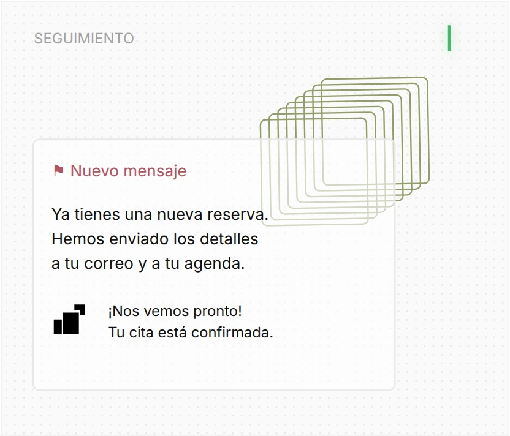
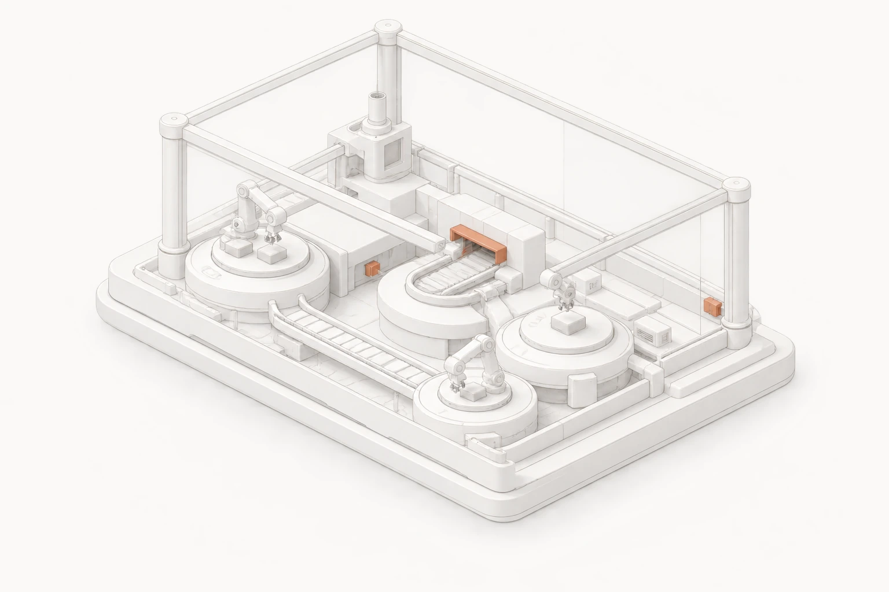
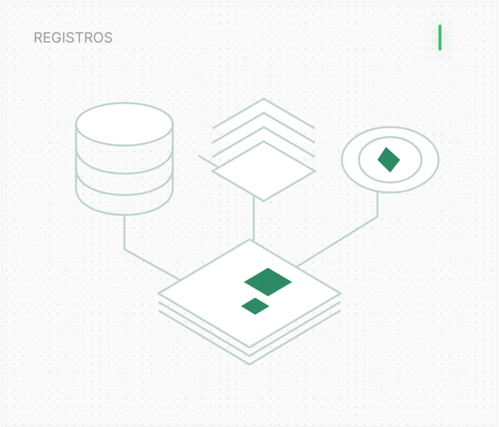
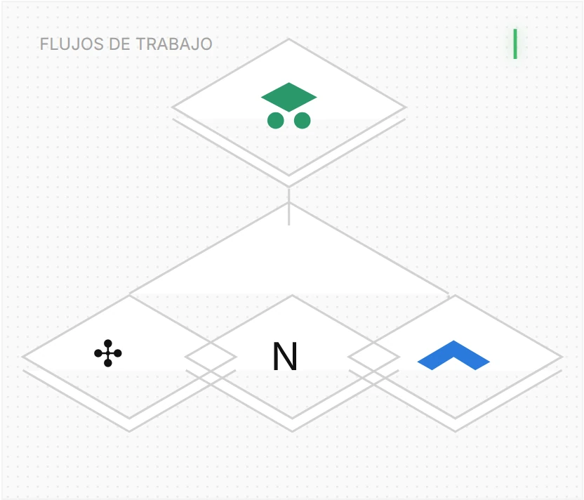
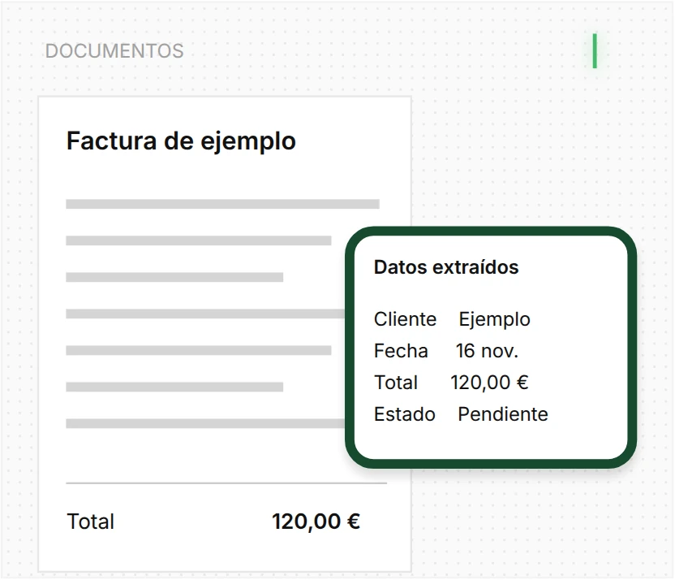
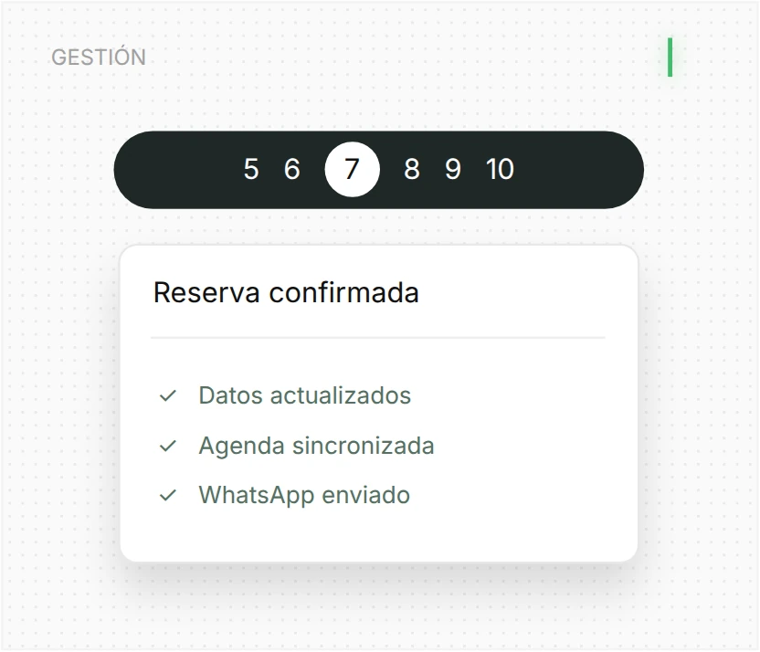
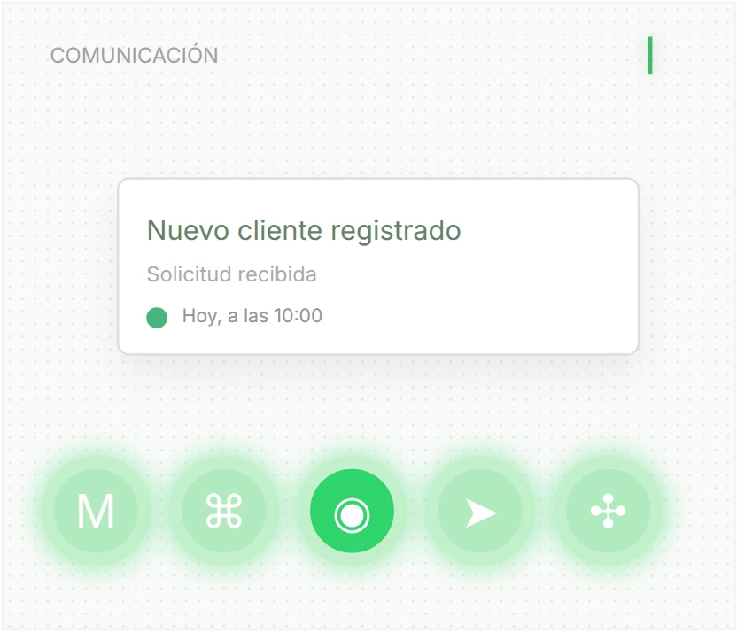
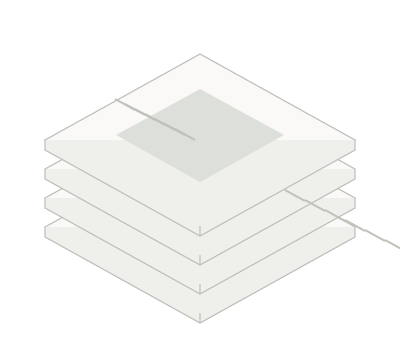

Resuelve antes. Atiende mejor.
Detecta incidencias, asigna responsables y mantén cada conversación al día, sin perseguir correos.
Tu aliado para la próxima etapa.
Conectamos tareas, datos y herramientas para que tu equipo dedique menos tiempo a lo repetitivo y más a lo que importa.
Reserva una llamada
Un sistema, tus herramientas.
Lo que construimos, para ti
Sistemas que conectan tus flujos de principio a fin, integrados con las herramientas que tu equipo ya utiliza.

Detecta incidencias, asigna responsables y mantén cada conversación al día, sin perseguir correos.

Convierte los datos dispersos en comunicaciones que encajan con el contexto de cada cliente.

Un mismo flujo para agenda, documentos y avisos. Cada aplicación, en su lugar.

Transforma documentos en información útil, sin copiar y pegar los mismos campos.

Coordina los pasos de cada solicitud y deja al equipo una vista clara de lo pendiente.

Recoge una solicitud, confirma el siguiente paso y mantén la información conectada.
Del trabajo manual a un sistema conectado. Entender primero, diseñar después y avanzar con cada paso bien definido.
Revisamos cómo trabaja el equipo, dónde se repiten las tareas y qué herramientas forman parte del día a día.
Dibujamos un flujo sencillo: qué lo activa, qué información necesita y dónde interviene una persona.
Preparamos las conexiones y las validamos con ejemplos antes de utilizarlas en el trabajo real.
Observamos cada paso, resolvemos los puntos de fricción y ajustamos el sistema a lo que necesita el equipo.
Una base para la siguiente etapa
La tecnología es una parte. El resto es entender tu negocio y construir con criterio.
Un punto de contacto para entender el proceso y tomar decisiones con contexto.
A tu lado
Antes de empezar, definimos las conexiones, las fases y lo que se va a entregar.
Sin sorpresas
Un sistema necesita seguimiento. El canal y las condiciones se acuerdan en cada proyecto.
Todo acordado
Las tareas sensibles conservan un punto de revisión antes de seguir adelante.
Control humano
Las herramientas se adaptan al proceso, no al revés. Empezamos por lo que ya utilizas.
A medida
Permisos, acceso y tratamiento de datos se revisan antes de conectar las herramientas.
Desde el inicio

Preguntas con respuesta
Lo esencial sobre esta demo y sobre cómo plantear un proyecto de automatización.
Tareas repetitivas con reglas claras: registrar solicitudes, actualizar datos, coordinar una agenda o preparar un aviso. Esta página muestra ejemplos visuales, no servicios conectados.
Es el nombre de esta demo de diseño, inspirada en la referencia visual facilitada. No representa un cliente, una empresa operativa ni resultados reales.
No necesariamente. Un proyecto real empieza revisando qué utilizas y qué conexiones permite cada herramienta. La compatibilidad se confirma antes de contratar.
No tiene por qué. Se pueden incluir revisiones humanas y límites para que las decisiones sensibles sigan en manos del equipo.
No. Las pantallas, los mensajes, los importes y las ilustraciones son material de ejemplo. No se muestran datos de clientes.
No. La navegación, el menú y estas preguntas funcionan, pero la demo no envía datos, no conecta servicios y no confirma reservas reales.
El pack de Ener Coruña reúne identidad de marca, diseño web y el Sistema Completo de reservas y avisos por WhatsApp. El alcance concreto se acuerda con cada negocio.
Vuelve a la página de Demos y contacta con Ener Coruña. Cuéntanos tu sector, qué necesitas comunicar y qué tareas te gustaría simplificar.
Tu próxima etapa empieza aquí
Esta es una demo visual. Si quieres una marca y una web para tu negocio, el siguiente paso es hablar con Ener Coruña.
Hablar con Ener Coruña